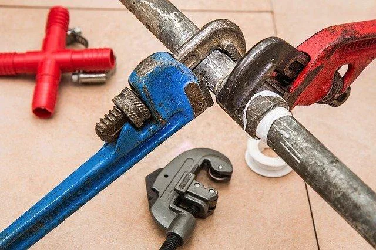

We believe security software like Whonix needs to remain Open Source and independent. Would you help sustain and grow the project? Learn more about our 14 year success story and maybe DONATE!
VMwareAdvanced DocumentationVPN-FirewallPrevious page: VMwareIndex page: Advanced DocumentationNext page: VPN-FirewallLeak Tests

Major leak tests for IP/DNS Leaks. How to check if this application is leaking? How likely is that application to be leaking? Unsuitable Tests: Location Detection, Operating System Detection.
Introduction
This wiki page lists and documents all major leak tests.
Common Questions:
- How to check if
applicationis leaking? - How likely is
applicationto be leaking?- Note: Replace
applicationin the above question with an actual application or activity.
- Note: Replace
Generic Answer:
- See Whonix against Real Attacks for a list of many past anonymity attacks where Whonix kept its users safe.
- See Whonix uses multiple security layers for reasons why leaks are highly unlikely.
- See this page Leak Tests for testing for IP/DNS leaks generally.
- Chapter Application Specific Leak Tests.
- See Security Reviews and Feedback for a list of notable reviews and feedback about the security of Whonix.
- Consider using corridor, a Tor traffic whitelisting gateway.
- See
 System Audit for how users (cannot) verify the system is configured as
intended.
System Audit for how users (cannot) verify the system is configured as
intended. - This might also be related to asking "How secure is Whonix?". → Technical Introduction
Unfortunately, leak testing is as complicated as programming. One cannot learn it in a short period of time, and it is highly unlikely to find an online volunteer teacher. It is infeasible for the Whonix project to educate everyone in the depths of networking.
Knowledge Assumed
- Expected issues with popular test pages
- Search for previous discussions before reporting.
Leak Testing Websites
Read first! → Browser Tests
There are too many websites for leak testing. (Some are offline.)
None of the Leak Testing Websites running inside Whonix-Workstation™ are able to determine the real external clearnet IP address, no matter if plugins, Flash, and/or Java are activated.
DNS Leak Tests
Online
- DNS leak test.com
- DNS Leak Test
- Browser Leaks
- Anonymster DNS leak test
- PureVPN DNS leak test
- Surfshark DNS leak test
Deactivate Host DNS
Deactivating the DNS on your host should result in not being able to
use nslookup anymore, but Whonix-Workstation
nslookup should still be functional.
Theoretical background: Whonix-Workstation requests should always be resolved by Whonix-Gateway™. In the case of a DNS leak, the host operating system is resolving DNS queries for the Whonix-Workstation. Deactivating the host's DNS would make Whonix-Workstation DNS queries non-functional, breaking functionality. This confirms a DNS leak.
Deactivate Qubes DNS
Platform-specific.
- Non-Qubes-Whonix™: Inapplicable. Use Deactivate Host DNS instead.
- Qubes-Whonix™: See below.
This is similar to Deactivate Host DNS. Instead of disabling host DNS, in Qubes terms, that would be "disable Qubes dom0 DNS." But since Qubes dom0 is non-networked by default, that is also inapplicable.
For Qubes-Whonix, instead, a leak test could include disabling DNS
from any or all VMs that are upstream of sys-whonix. By
default, sys-whonix is connected to
sys-firewall, which is connected to sys-net.
Therefore, to have a test equivalent to Deactivate Host DNS, the user could disable DNS in
sys-firewall and in sys-net.
Deactivate Whonix-Gateway DNS
This is already the default. For details, see Whonix-Gateway System DNS.
On the Whonix-Gateway.
Open file /etc/resolv.conf in an editor with
administrative ("root")
rights.
1 Select your platform.
2 Notes.
- Sudoedit guidance: See
Open File with Root Rights for details on why using
sudoeditimproves security and how to use it. - Editor requirement: Close Featherpad (or the chosen text
editor) before running the
sudoeditcommand.
3 Open the file with root rights.
sudoedit /etc/resolv.conf
2 Notes.
- Sudoedit guidance: See
Open File with Root Rights for details on why using
sudoeditimproves security and how to use it. - Editor requirement: Close Featherpad (or the chosen text
editor) before running the
sudoeditcommand. - Template requirement: When using Qubes-Whonix, this must be done inside the Template.
3 Open the file with root rights.
sudoedit /etc/resolv.conf
4 Notes.
- Shut down Template: After applying this change, shut down the Template.
- Restart App Qubes: All App Qubes based on the Template need to be restarted if they were already running.
- Qubes persistence: See also
Qubes Persistence
- General procedure: This is a general procedure required for Qubes and is unspecific to Qubes-Whonix.
2 Notes.
- Example only: This is just an example. Other tools could achieve the same goal.
- Troubleshooting and alternatives: If this example does not work for you, or if you are not using Whonix, please refer to Open File with Root Rights.
3 Open the file with root rights.
sudoedit /etc/resolv.conf
Comment out everything (# before every line so everything is ignored).
#nameserver 127.0.0.1As a test result, the DNS requests in the Whonix-Workstation should still work, while the DNS requests in the Whonix-Gateway no longer work.
Using dig
Another very basic leak test: Because Tor's DNS resolver does not handle AAAA records, this will not return any Google hostnames if run on Whonix-Workstation and DNS requests aren't leaking. Running:
dig AAAA check.torproject.orgShould reply:
; <<>> DiG 9.8.1-P1 <<>> AAAA check.torproject.org
;; global options: +cmd
;; Got answer:
;; ->>HEADER<<- opcode: QUERY, status: NOTIMP, id: 42383
;; flags: qr rd ra; QUERY: 1, ANSWER: 0, AUTHORITY: 0, ADDITIONAL: 0
;; QUESTION SECTION:
;check.torproject.org. IN AAAA
;; Query time: 0 msec
;; SERVER: 10.152.152.10#53(10.152.152.10)
;; WHEN: [date]
;; MSG SIZE rcvd: 38Tor also does not support DNSSEC yet. Running:
dig +multiline . DNSKEYIt should now show DNS cryptographic keys. See example output from here.
Using nslookup
Running:
nslookup -type=mx check.torproject.orgShould reply:
Server: 10.152.152.10
Address: 10.152.152.10#53
** server can't find check.torproject.org: NOTIMPRunning:
nslookup -type=AAAA check.torproject.orgShould reply:
Server: 10.152.152.10
Address: 10.152.152.10#53
** server can't find check.torproject.org: NOTIMPLeaks through the Host or VM
Shut down the Whonix-Gateway and start the Whonix-Workstation. The Whonix-Workstation shouldn't be able to exchange data with any outside target.
If there's no gateway running, there is nobody the workstation can connect to. The workstation's internal network endpoint, being the gateway, is simply unavailable.
Ping Test
First, make sure both VMs are online. Since ICMP is not supported by Tor and is filtered by the Whonix firewall, you should not be able to ping any servers.
FIN ACK / RST ACK - Leak Test
Credit for FIN ACK / RST ACK - Leak Test (coined by Whonix): Originally written by Mike Perry on the tor-talk mailing list, he found a transparent proxy leak without references to Whonix. (source) The test has been adapted for Whonix.
Note: The following IP, 74.125.28.104, points to www.google.com and should be seen as an example.
On the host:
Close your browser and cease all other non-Whonix online activity to avoid contaminating the following test.
Install tcpdump.
sudo apt update
sudo apt install tcpdumpRun tcpdump. Replace -i wlan0 with your network
interface. If you use -i any, you will also see
transproxied packets (which are not normally leaked).
sudo tcpdump -n -i wlan0 host 74.125.28.104 and tcp port 80For testing/learning, connect to 74.125.28.104 (ping, open in a browser, use curl, scurl, or similar) and see how it looks when a connection to that IP is being made.
Close the connection. Stop tcpdump. Start tcpdump again.
In Whonix-Workstation:
Create a socket connection.
python
import socket
s = socket.create_connection(("74.125.28.104", 80))On Whonix-Gateway:
Stop Tor.
sudo service tor@default stopIn Whonix-Workstation:
Close the socket connection.
s.close()On the host:
Check that you cannot see any connections to 74.125.28.104 in tcpdump.
Variations of this test:
- You could also run tcpdump in Whonix-Workstation or on Whonix-Gateway.
- You could also enable transparent proxying for Whonix-Gateway's own traffic and create the socket connection on Whonix-Gateway.
Forum discussion:
Integrated tshark Leak Test
On Whonix-Gateway, start looking for leaks.
You need to install the anon-gw-leaktest package.
## Login as user, open a shell as user, or use su user.
## /usr/bin/leaktest
sudo leaktestOn Whonix-Workstation, try to produce a leak.
You need to install the anon-ws-leaktest package.
## Login as user, open a shell as user, or use su user.
## /usr/bin/leaktest
sudo leaktestIf you are wondering how this works and what it does, the old article Dev/Leak Tests Old is still being kept.
- Original article.
- As copy-and-paste tutorial.
- For better understanding with more comments.
- Perhaps useful for similar projects.
- Optional additional tests.
Integrated systemcheck Leak Test
Please also run systemcheck on
Whonix-Gateway and Whonix-Workstation. systemcheck's Tor
SocksPort and Tor TransPort test (the latter
only on Whonix-Workstation [1]) also perform leak
testing. systemcheck would report a big warning if
check.torproject.org could not detect Tor.
systemcheck --leak-tests
Torrent Leak Tests
- https://www.doileak.com
- https://ipleak.net
- Please add more to the list if you know of other tests.
UDP Leak Tests
- Same as above.
- Please add more to the list if you know of other tests.
Other Leak Tests
- corridor, a Tor traffic whitelisting gateway, a clearnet leak tester
- Using corridor, a Tor traffic whitelisting gateway with Qubes-Whonix
- A similar project published another leak test. Read How can I test if there is a leak in the setup respectively all traffic goes through Tor?. This has not been tested with Whonix yet. If you do it, please share your results.
Qubes-Specific
Template Update Proxy Leak Test
Start your Whonix-Gateway Template (commonly called
whonix-gateway-18). [2]
In your TemplateVM:
Start downloading some big[3] package. [4] Example:
apt download firefox-esr
Now switch to your Whonix-Gateway ProxyVM (commonly called
sys-whonix) and stop Tor. [5]
sudo service tor@default stop
The expected result in the Template: a functional download that stops as soon as Tor is stopped.
Get:1 https://deb.debian.org/debian {{Stable project version based on Debian codename}}/updates/main firefox-esr amd64 52.5.2esr-1~deb8u1 [44.7 MB]
Err https://deb.debian.org/debian {{Stable project version based on Debian codename}}/updates/main firefox-esr amd64 52.5.2esr-1~deb8u1
500 Unable to connect
E: Failed to fetch https://deb.debian.org/debian/pool/updates/main/i/firefox/firefox-esr amd64 52.5.2esr-1~deb8u1_amd64.deb 500 Unable to connectYou can now start Tor in your Whonix-Gateway ProxyVM again.
sudo service tor@default start
Repeat this test with your Whonix-Workstation Template (commonly
called whonix-workstation-18).
IP Activity Log Test
When logged into some services such as Twitter, there is an IP log
under Twitter
/settings/your_twitter_data/login_history.
- Find your real external IP address on the host operating system
using
myip.isor any other website of your choice. You may use multiple websites for verification. - Compare it with the Twitter activity log.
If your real external IP is not in the Twitter activity log, then your real IP was not leaked.
Packet Analyzer
- wireshark
- tshark
Application-Specific Leak Tests
Sorted roughly by difficulty, from easiest to most difficult.
- Set up a server. For simplicity, consider a server dedicated solely for leak testing. Install the server software used by the client software you intend to test for leaks. Connect to the self-hosted server using the client software in question. Monitor incoming connections to your server. While this test is useful, it may not detect all types of leaks, such as DNS leaks.
- If the application is open source, review the source code.
- If the application is closed source: Avoid Non-Freedom Software or use reverse engineering techniques.
- Use a Packet Analyzer.
Unsuitable Tests
Location Detection
As per the default settings of Tor upstream (The Tor Project, the original developer), Tor continually changes circuits, especially if a circuit breaks.
Tor exit relays are hosted by volunteers in many different countries, and these relays also change frequently, particularly if a previous circuit becomes unusable (e.g., due to a Tor relay restart after applying operating system updates, which causes the circuit to go down and results in a connection reset for the user).
Location detection can be highly inaccurate. Sometimes clearnet IP addresses are detected as being hundreds of miles away from their actual location. Source: Personal experience of Whonix developer Patrick. Many other users have likely reported similar experiences. Please edit this section if you know of more structured research or better sources on this topic.
Operating System Detection
Operating system detection tests can be unreliable.
In the personal experience of Whonix developer Patrick, for example,
Twitter
/settings/sessions incorrectly identified the active
session as using Windows, when in reality, the browser was
running on a Linux-based operating system.
While Twitter /settings/sessions is not explicitly
labeled as a browser test, it effectively functions as one. Therefore,
the issues described on the Browser Tests wiki page apply equally.
Tor Browser is configured to blend in with the most common user agent on the internet to reduce Browser Fingerprinting. It mimics a generic Windows Firefox browser to prevent websites from uniquely identifying your system. This setting is the default implementation by Tor upstream (The Tor Project).
See also:
Nyx
The Tor Controller Nyx is also unsuitable for leak testing. See Whonix Nyx FAQ.
Search Engine Search Results
Even if Google or another entity had the ability to break Tor or Whonix, they would not publicly reveal this capability by displaying more relevant search results.
Others
These tools are Unsuitable Connectivity Troubleshooting Tools.
See Also
Footnotes
- Because Whonix-Gateway does not have a
TransPortby default. - These are assumed to be torified, i.e., having their NetVM set to sys-whonix.
- With a small package, you would not have a chance to easily and quickly disable Tor while it is downloading.
- Alternatively, you could also run
sudo apt updateinstead of downloading a big package and interrupt that. However, it would be less conclusive, because APT updating may only break due to broken DNS. A long-running transfer that no longer depends on functional DNS resolution would be far easier to spot. (If the download was non-torified, it should not matter if we stop Tor during the transfer.) - Alternatively, although less conclusive, instead of stopping Tor, you could also stop qubes-updates-proxy during the transfer. sudo service qubes-updates-proxy stop This should lead to the same expected result.